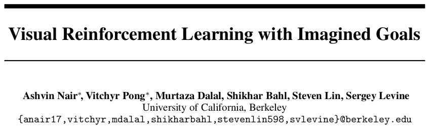
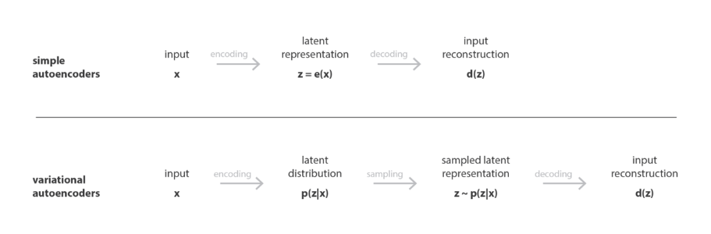
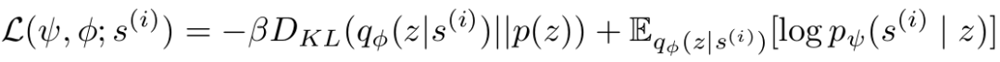
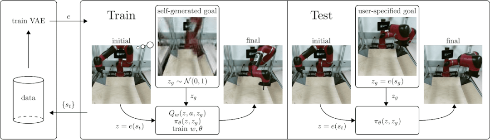
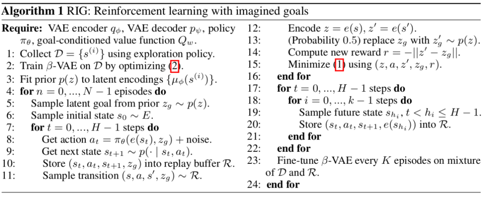
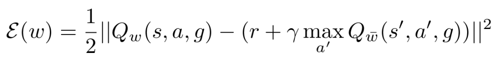

今天说一下发表于NIPS 2018的一篇文章，以图片为目标的视觉强化学习。

为了更直观的了解一下这篇论文解决的问题，可以看一下这个链接里的视频demo:
https://sites.google.com/site/visualrlwithimaginedgoals
这里简单介绍下Variational Autoencoders（VAE），变体自动编码器，VAE是一种典型的生成神经网络，功能类似Generative Adversarial Networks (GAN)，VAE包含两个部分，一个是编码器qφ，将图片转换成向量，还有一个是解码器p[这里下标符号打不出来，注明一下]，但VAE不同于通常的编解码器：

通常的编解码器，是将输入转换成向量，再由向量解码，对比解码出来的结果和原始输入，可以判断这个编解码器的好坏。而为了让VAE有生成网络的能力，则是将输入转换成向量的概率分布，再从分布中采样，最后解码，具体原理，请参考参考[1]，有机会专门介绍一下GAN和VAE。这篇论文中训练VAE的损失函数如下：

L中头两个参数分别指解码器和编码器的参数，DKL指KL散度，即相对熵，计算的是两个分布之间的距离。编码器和解码器是一起联合在一起训练的。

在这个研究中，目标域G和状态域S是一致的。即，所有可能的状态都应该能达到才对。
首先通过随机执行一些策略，观察结果，来训练一个VAE将状态图和目标图转换成向量，z=e(st), zg=e(g)。
在训练好VAE之后，训练目标导向的Q-function Q(z,a,zg)和对应的策略，并再对VAE进行优化。算法如下：

其中2指VAE的损失函数，1指Q(s,a,g)的损失函数，用的是Bellman error：

参考：
[1] Joseph Rocca, Baptiste Rocca, Understanding Variational Autoencoders （VAEs), torwards data science, 2019
/2.png)
Comments